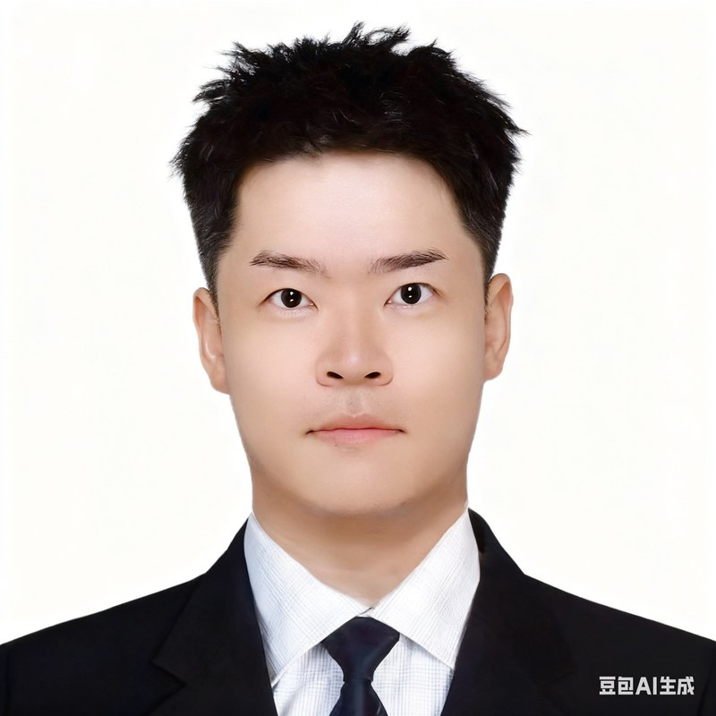

欢迎来到我的主页
热爱是成功最大的动力！
敏而好学，积极工作，善于沟通，有一定组织协调能力，具有高度工作热情和责任感。8项专利，英语口语可作为工作语言。
151-1008-6435
751633032@qq.com
河北廊坊
1989.03
硕士
中共党员

8 Patents
Innovation
求职意向
工艺开发 / 设备导入 / 综合解决方案专家
核心技能
Solidworks, Inventor, CAD
Ansys, CFX, Tol Analyst
Composer 工艺动画
DFM 流程 & 规划
锂电池工艺 (模组/PACK)
英语六级 (CET-6)
日语四级 (JLPT N4)
PMP
教育经历
M
2013.09 - 2015.07
北京交通大学
机械工程 | 硕士
- 专业 TOP 5%
- 多次获得优秀员工、国家奖学金
B
2009.09 - 2013.07
燕山大学
机械设计制造及其自动化 | 学士
- 学院 TOP 15%
工作经历
2025.07 - Present
厦门海辰储能科技股份有限公司
设备开发高级工程师
- 负责美国海辰补电、模组、PACK、集装箱线导入相关工作；Base美国辅助完成各产线设备导入、qualify、试生产及爬坡阶段任务。
- 对接美国团队，完成项目从中国设备开发团队移交至美国运维团队；参加新产品设计变更评审，组织中美团队推进项目改造计划。
- 通过飞书云文档开发设备故障统计系统，可以追溯设备DT时间、运维人员响应时间等信息。
2023.07 - 2025.05
Coulomb Solution Inc (纯美资)
工程部/设备科经理
- 产线设备导入：负责规划美国德州工厂模组PACK生产线、美国加州工厂空压机装配线、小三电手动线。
- 识别中美两国制造环境差异，评估国际项目风险，完成工艺及设备规划并整理项目预算，导入设备供应商并主导完成技术交流，协助PMO完成投资决策报告。
- 对接合作方产品部门（CATL国际产品部、国内汽车零部件公司），对目标工业化产品进行工艺评估及量产化二次开发，确定国际合作策略。
- 部门工作：搭建公司内部知识库，完成《锂电池全流程工艺设备知识库》《公司设备设计导入标准规范》等标准化文档。
2021.06 - 2023.07
广州小鹏汽车科技有限公司
研发部/资深工艺开发工程师
- 量产导入：负责新产品量产工艺开发、导入，量产工厂规划及量产设备导入及验收--广州工厂、武汉工厂、肇庆工厂模组pack产品工艺开发及工厂、设备规划。
- 工艺开发：负责新产品、新工艺开发及实验试制--负责大圆柱产品预研项目&小鹏汇天飞行汽车电池项目工艺开发、设备工装开发、试制实验项目。
- 部门工作：负责日常部门管理工作及工艺开发组管理工作--部门能力建设规划完成试制线规划及设备导入（刀片电芯产品试制线）、涂胶及焊接工艺专题研发管理、部门专利体系化、数字化工艺文档系统开发。
2018.05 - 2021.06
无锡先导智能装备股份有限公司
产品经理 (方案主管)
- 负责电动汽车电池包装配项目以及智能制造相关项目，工作内容为：与客户对接需求、方案制作、成本评估及报价并最终参与招投标工作，负责战略客户跟进如一汽大众、上汽通用、宝马、日产、丰田、LG、SKI、Tesla等。
- 熟悉主流三大类模组(方壳、软包、圆柱)及电池包PACK产品工艺，从客户角度分析工艺、提出针对性解决方案并协助客户进行工艺优化。
- 调研行业发展趋势、前沿技术并进行业内竞品分析：对电动汽车快充/换电方案、固态电池技术、电池包拆解回收技术、CtoP解决方案技术、数字双胞胎技术应用、VR/AR在工业自动化内的应用等技术进行调研。
- 负责方案部门日常建设工作：工作统筹安排及人员考核、降本专题专机研发、部门业务流程规范化、人员招聘面试、部门人员培训、对外宣传资料及宣传工作等。
2015.07 - 2018.05
北京机械工业自动化研究所
机械工程师
- 在杭州长江汽车、北汽新能源汽车(普莱德)、东软睿驰电动汽车、成都/天津银隆电动汽车电池包自动装配生产线，及安徽通润液压缸装备生产线项目中负责：非标机械结构设计；关键零部件强度仿真分析与3D模型渲染；标准件及外购件选型与系统集成；项目其他设备选型、技术交流、询价与采购；并赴现场辅助进行调试、技术支持工作。
- 参与北汽新能源pack装配线、空中导弹项目：甲方需求接触、方案提供、技术交流展示、标书撰写工作等售前工作。
- 搭建PDM数据管理系统，负责数据归档及管理以及数据库的日常维护工作。
项目经历
美国海辰补电、模组、PACK、集装箱线导入
海辰项目经历
2025.07 - Present
- (1) 负责美国海辰补电、模组、PACK、集装箱线导入相关工作；Base美国辅助完成各产线设备导入、qualify、试生产及爬坡阶段任务。
- (2) 对接美国团队，完成项目从中国设备开发团队移交至美国运维团队；参加新产品设计变更评审，组织中美团队推进项目改造计划。
- (3) 通过飞书云文档开发设备故障统计系统，可以追溯设备DT时间、运维人员响应时间等信息。
美国德州工厂模组PACK生产线（商用车方壳模组）
CSI项目经历
2023.07 - 2025.05
- (1) 对接CATL，结合美国生产环境重新开发BC3/BC5生产工艺，推进零部件美国本土化工作。
- (2) 完成工厂初步规划，专业国际项目风险报告，完成预算评估。
- (3) 导入中国设备供应商，撰写技术标书，主持技术评审，推进设备招标定点。
美国加州工厂小三电半自动装配线（PDU/OBC/DCDC）
CSI项目经历
2024.01 - 2025.05
- (1) 目前为合作中方纯手动线装配，结合美国生产要求进行半自动化工艺开发。
- (2) 供应商技术交流，协助完成项目招标定点。
美国加州工厂车载空气压缩机手动装配线
CSI项目经历
2024.05 - 2025.05
- (1) 协助解决现场质量问题，结合美国生产要求完成手动工艺路线美国本土移植。
- (2) 供应商技术交流，协助完成项目招标定点。
广州工厂模组PACK量产线（方壳大模组）
小鹏项目经历
2021.06 - 2023.07
- (1) 供应商技术交流，协助完成项目招标定点。
- (2) 协助完成设备验收、现场调试导入。
武汉工厂模组PACK量产线（方壳CTP）
小鹏项目经历
2021.06 - 2023.07
- (1) 产品量产工艺规划、量产厂房土建规划、投资成本评估及立项资料准备。
- (2) 供应商技术交流，协助完成项目招标定点。
- (3) 衔接研发与制造沟通、发起同步工程、协助完成设备验收、现场调试导入。
刀片试制线及量产线（短刀MTP）
小鹏项目经历
2021.10 - 2022.08
- (1) 产品试制及量产工艺规划、试制及量产车间布局规划、投资成本评估及立项资料准备。
- (2) 供应商技术交流，协助完成项目招标定点。
- (3) 衔接研发与制造沟通、发起同步工程、协助完成设备验收（试制线已完成）。
大圆柱试制线（大圆柱CTP）
小鹏项目经历
2021.12 - 2022.10
- (1) 大圆柱产品工艺对标分析、试制及量产工艺规划。
- (2) 产品A/B样试制工艺文件撰写、试制工装规划、主导完成试制并完成试制总结。
LG 圆柱模组装配线
先导项目经历
2018.07 - 2019.08
- 项目简介：本项目为韩国 LG 化学针对越南低速车市场开发的圆柱电芯模组 pack 项目 (含多个子项目，项目周期多次调整) ，包含一条模组线， 一套 pack 线， 模组线自动化程度要求较高。
- (1) 赴韩国拜访客户，介绍公司及部门，获取客户信任并收集客户需求。
- (2) 全英文制作装配集成方案说明资料、项目实施计划并评估项目成本及报价。
远景 (日产AESC) 软包电池模组装配线
先导项目经历
2018.10 - 2019.04
- 项目简介：本项目为海外系统集成项目，客户为日方技术团队(二期为中方技术团队主导)，对我方技术要求十分严格，多次赴日进行前期技术交流及后期设计评审。
- (1) 赴日本拜访客户，介绍公司及部门，参与日方客户需求说明会。
- (2) 跟进客户需求，制作装配集成方案说明资料、项目实施计划并评估项目成本及报价。
- (3) 赴日本进行技术评审，签订技术协议细则。
- (4) 跟进设计实时进度、协调联系海外供应商、提炼并优化形成降本专机课题项目。
一汽丰田(常熟)工厂模组线项目
先导项目经历
2019.03 - 2019.05
- 项目简介：本项目为一汽丰田(常熟)工厂模组线项目，项目自动化程度较低，但对人机工程要求较高，日方客户对项目细节提出严格要求。
- (1) 拜访客户介绍公司技术实力、接待客户来访介绍先导标准与技术优势；
- (2) 解读客户需求，组织学习丰田标准(TMS 标准)，组织制作对应机械、控制、人机方案，评估成本，并最终完成技术评分。
一汽大众 PACK 装配线
先导项目经历
2019.06 - 2019.10
- 项目简介：本项目为一汽新能源为红旗开发的 PACK 装配线项目，项目采用AGV 输送，自动化程度较高，例如 PACK 测试、PACK 上下线等工序均实现无人化操作。
- (1) 对接德国、中国两方客户，介绍公司背景及技术实力与技术优势。
- (2) 跟进客户需求，制作装配集成方案说明资料、项目实施计划并评估项目成本及报价。
- (3) 参与项目实施阶段讨论，协助解决现场问题；
Tesla (上海) 圆柱电芯模组装配线
先导项目经历
2019.10 - 2019.12
- 项目简介：本项目为圆柱电芯模组装配线项目，客户对接团队为美国海外团队，项目时间紧、要求高、需要协调中、美、德各方资源。
- (1) 制作项目方案，与美方对接，负责客户考察相关事宜。
- (2) 核算成本、锁定方案细节并协助签订合同。
- (3) 翻译核心设计原则，主导完成设计阶段与客户的沟通并协助完成 3 次外方驻场评审。
- (4) 跟进项目实施，协助解决项目现场各类问题，汇总相关增减项合同。
上汽通用 HEV 软包模组装配线
先导项目经历
2019.10 - 2019.12
- 项目简介：本项目为上汽通用针对 HEV 开发的小型软包模组线项目，产线为试验线，多项前沿技术如虚拟调试等也通过本项目进行调试。
- (1) 对接客户，介绍公司技术实力、接待客户来访，了解客户需求，分析通用标准；
- (2) 组织制作方案，与客户进行技术交流并最终完成投标相关工作，获得客户认可；
- (3) 评估客户现有美方产线，并制定利旧策略；
德国宝马模组及 PACK 装配线项目
先导项目经历
2020.04 - 2020.08
- 项目简介：疫情期间开始对接，远程制作相关说明资料并在部门资源支持下进入德国宝马供应商名录。
- (1) 对接德国宝马客户，制作介绍资料、宣传视频，协调制作能力展示 demo；
- (2) 解读宝马全英标准，并组织制作方案；
其他各类项目对接
先导项目经历
2018.05 - 2020.08
- (1) 工信部两化研究所，智能制造实验项目。(AR/VR、智能物流等前沿技术应用试点项目)
- (2) Cadenza, Arrival 模组 pack 组装项目。(赴美进行技术交流，可独立进行技术交流)
- (3) 德国宝马、长风动力、小鹏、车和家、中航锂电、捷威、多氟多等模组 pack 装配项目。
- (4) 江苏联通，企业私有云及 5G 网络试点项目。(主导签订战略合作协议)
银隆电池方壳模组及 PACK 自动装配线 (天津、成都厂区)
北自所项目经历
2017.06 - 2018.05
- 项目简介：本项目为格力电器与珠海银隆合作的新能源汽车项目。我中心主要负责电池模组及 PACK 自动化装配线，为银龙新能源汽车提供电池包，包含电芯立体仓库、电芯分档检测、模组装配及检测线、PACK 装配及检测线。
- (1) 进一步推广应用 PDM 数据管理系统，负责管理所有设计图纸、BOM 等设计资料。
- (2) 赴珠海格力总公司，负责与格力相关部门进行技术对接，编制验收方案等。(独立完成)
- (3) 对外协加工产品进行组装指导与质量验收。(独立完成)
- (4) 负责所有上料装置，自动翻转专机等设计工作。
- (5) 赴成都现场协助调试，负责技术支持。
- (6) 负责与涂胶厂商，线体厂商，及项目仿真模拟厂商进行技术交流。
通润液压缸自动装配线
北自所项目经历
2017.03 - 2017.11
- 项目简介：本项目为汽车用千斤顶液压缸(3 款) 自动装配线。包含缸体、活塞、调速阀等共 20 余种零件的装配任务，该产品全球销量领先，正弦自动化程度高。
- (1) 上料分料机构设计，缸体定位专机等专机设计，应用 robotstudio 进行机器人仿真。
- (2) 以及与甲方公司方案沟通，上料振盆的选型与技术交流。
- (3) 后期赴安徽现场协助调试负责技术支持。
北汽普莱德 PACK 自动装配线
北自所项目经历
2016.07 - 2017.03
- 项目简介：普莱德电池包自动装配线是直接为北汽新能源汽车提供电池包供货，本项目分为北京、溧阳两个电场，为电池包半自动装配线。
- (1) 前期与甲方客户技术沟通，出方案，应用 composer 等软件制作动画，做方案展示。
- (2) 设计产品上料装置。项目后期赴溧阳现场，协助调试负责技术支持。
东软睿驰方壳模组及 PACK 自动装配线
北自所项目经历
2016.05 - 2016.11
- 项目简介：本项目为沈阳东软睿驰电池包自动装配线。
- (1) 上料机构设计，简单专机设计。
- (2) 负责对口协调激光焊接、车间内恒温房等供应商，进行技术对接。
- (3) 后期赴现场负责技术支持工作。
长江新能源电动汽车方壳模组及 PACK 装配线
北自所项目经历
2014.05 - 2016.04
- 项目简介：本项目为杭州长江新能源汽车电池 PACK 自动装配线，为长江 EV 提供能源电池包，产线包括模组装配及检测线、PACK 装配及检测线。正线自动化程度高，是杭州市经典项目工程。
- (1) 我介入项目为中后期，主要负责现场调试技术支持。
- (2) 压紧机构等简单专机设计。